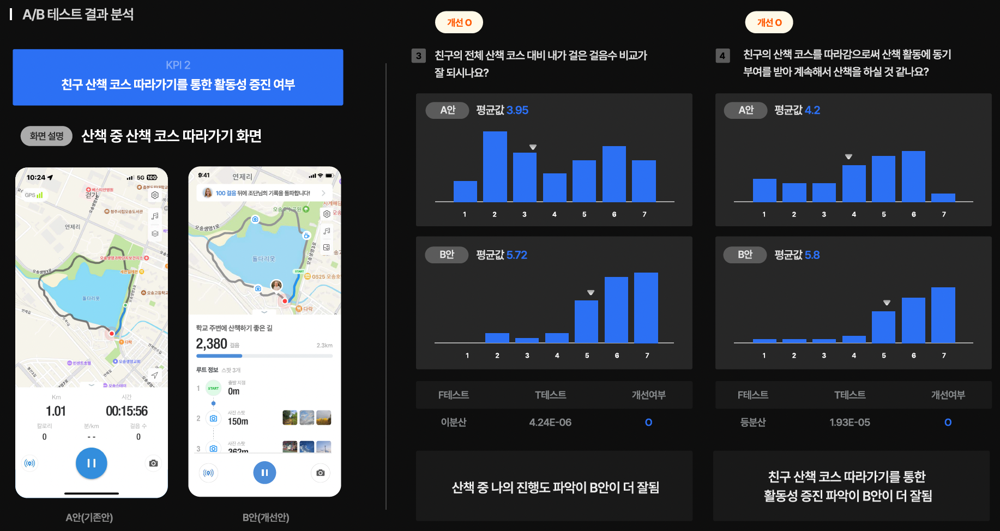

ch4. A/B 테스팅 실행 및 결과의 해석
21.0.1 설문 실행
설문지가 준비 되었으니 이제 설문을 배포하고 응답을 받습니다. 우선 설문 대상자를 정의합니다. 앞에서 설명한 것처럼 A 디자인에 대한 설문 30명 이상, B 디자인에 대한 설문 30명 이상이 참여해야하고, 두 그룹의 참여자들은 참여자로서의 조건은 동일하지만, 서로 다른 참여자입니다. 즉, A 디자인에 응답한 참여자는 B 디자인에 응답하면 안됩니다. 각 참여자가 겹치는 걸 방지하기 위해서 설문 배포 할 때도 주의 공지를 하고, 설문에 참여자의 e-mail을 받아서 동일인이 아님을 확인합니다. 참여자 e-mail 주소를 수집하면 동일인 구분에도 도움이 되지만 참여자 공지가 필요할 때나 경품 추첨 등으로 참여율을 높이고자 할 때도 유용합니다.
본 설문을 배포하기 전에 소수 인원(2-4명)을 대상으로 파일럿 테스트(Pilot Test)를 반드시 실시합니다.
설문 대상자와 같은 조건의 소수 인원을 대상으로 A, B 그룹 설문 원고에 대하여 실험을 합니다. 파일럿 테스트에서는 사용자들이 질문을 잘 이해하는지, 의문을 가지거나 잘못 이해하는 부분은 어디인지, 응답을 방해하거나 불편하게 하는 요인이 있는지, 응답 내용이 질문자의 의도 대로 반영 되고 있는지를 검토합니다. 파일럿 테스트는 형식은 온라인 설문이지만 응답자의 질문이나 상황에 바로 대응하기 위하여 대면으로 진행하기를 권합니다. 응답자가 의문이 있을 때 바로 어떤 부분이 문제인지 의견을 듣고, 수정안을 확인해보는 것이 좋습니다.
정확하고, 객관적인 사용자 의견을 받기 위해서 유료 설문 응답 서비스 사용을 지양합니다.
최근에는 설문 응답을 대행해주는 서비스들이 있어서 원하는 참여자 조건에 맞추어 참여자들을 리크루팅하고, 설문지를 배포하고, 결과까지 분석해주는 서비스를 사용할 수도 있습니다. 이러한 유료 대행 서비스를 사용한 사례를 보면 사용자 응답이 긍정적 방향으로 왜곡된 현상을 발견할 수 있었습니다. 설문 참여자들도 비용을 받고 설문에 임하는 것이기 때문에 응답률은 높지만 전반적으로 좋은 쪽으로 응답이 기울게 되어 객관성 문제가 발생합니다.
온라인 설문의 한계를 숙지하고 대비합니다.
온라인 설문을 받는 것은 여러 장점이 있지만, 응답자들이 언제 응답을 제출할지는 알 수 없습니다. 온라인 설문은 설문 요청자를 직접 만나지 않고, 시간, 공간의 제약이 없는 것이므로, 기본적으로는 응답률이 낮은 편입니다. 또한 설문 내용을 주의 깊게 보지 않고, 대충 답하는 응답자도 상당수 있게 됩니다. 그래서 제공한 설문에 성의있게 답할 수 있도록 원고의 내용이나 어투에서 정성과 신뢰감을 느끼게 하는 것이 중요합니다. 또 응답 기한은 여유있게 잡아놓고, 초기 응답률이 낮으면, 응답률을 높일 수 있도록 응답 대상을 넓히거나 반복해서 참여를 요청하는 등 응답 관리를 해야합니다.
21.0.2 설문 데이터 검수와 데이터 편집
우리가 진행하는 설문은 소규모이기 때문에 응답 데이터가 유효하도록 검수하는 일이 매우 중요합니다. 즉 설문 결과에 왜곡이 발생할 수 있는 성의없는 설문, 결측값이 많은 설문, 사용자 조건이 맞지 않는 설문들을 찾아서 제외할 필요가 있습니다. 그래서 설문 수가 좀 많아야 이런 문제 설문 값들을 빼고도 통계적 검증이 가능한 데이터 수를 확보할 수 있습니다.
- 일단 리커트 척도 질문의 모든 응답이 한쪽으로 치우친 입력, 즉 모두 1번이나 4번(중간값), 7번으로 응답한 설문이 있다면 제외합니다 . 응답자가 성의없이 일련 번호를 입력한 경우입니다.
- 응답에 전반적으로 결측값이 많다면 해당 설문을 제외하는 것이 좋습니다. 하지만 일부만 결측이 있다면, 결측 없는 응답들은 사용해도 됩니다. 이 경우는 우리가 데이터를 분석하는 과정에서 변수 간 관계 분석이 있을 경우에는 영향을 고려하여 신중하게 결정합니다.
- 응답자의 조건에 따라 응답의 내용이 큰 영향을 받는 경우는 조건을 균일하게 맞춰야 합니다. 이전 사례를 예로 들면 결혼 준비 서비스에 대한 설문을 하는데, 실제 결혼 준비 중인 응답자와 가상으로 결혼 준비를 상상하고 응답하는 응답자는 응답이 매우 다를 수 있습니다. 마찬가지로 온라인 쇼핑에서 반품 경험이 있는 사용자와 반품 경험이 없는 사용자는 구매 태도가 다를 수 있습니다. 이렇게 설문 전에 미리 사용자 스크리닝을 진행하지 않았는데, 응답 차이가 크게 나는 질문이 발견된 경우에는 설문 수집 이후에라도 할 수 있으면 같은 조건의 응답으로 선별하고, 따로 결과를 내는 것이 좋습니다. 이상과 같은 여러 상황을 대비하기 위해서는 충분히 많을 양의 설문을 확보하는 것이 좋습니다.
- 설문이 완료된 데이터는 엑셀 시트로 다운로드 받아서 각 A 디자인 응답 그룹, B 디자인 응답 그룹의 응답을 같은 질문 끼리 모아 엑셀 비교표를 편집합니다. 2장의 [그림 38]과 같이 문항 별로 A,B 그룹의 데이터를 배치하고, 2장의 안내와 같이 엑셀 함수를 사용하여 F-test, T-test를 실시합니다. 주관식 문항과 A/B 테스트와 관련 없는 문항은 대응표를 만들지 않습니다. R로 테스트 하는 경우는 A 그룹, B 그룹의 데이터를 하나의 엑셀 표로 합친 뒤, R에서 데이터프레임으로 불러오고, 변수로 각 그룹을 구분하여 비교하면 됩니다.
21.0.3 F-Test, T-Test 실행과 결과 해석
작성된 엑셀 비교 표에서 2장에서 학습한대로 각 문항 별로 F-test, T-test를 실시하고 결과 값의 p-value를 해석합니다.
- F-test의 결과 값이 0.05보다 크면 등분산입니다. 이후 T-test의 옵션에서 등분산 조건을 선택합니다. 결과 값이 0.05보다 작으면 이분산입니다. 두 그룹의 분포 정도가 다르다는 것이죠. 이 경우에는 이후 T-test의 조건을 이분산으로 선택합니다. 데이터 비교 표에 문항 별로 등분산인지 이분산인지 결과를 표기합니다.
- T-test 함수를 계산합니다. 함수에 두 그룹에 대한 테스트 범위를 지정하고, 양측 또는 단측 분포, 등분산 또는 이분산 옵션을 지정합니다. 테스트 결과 값인 p-value가 0.05보다 크면 A, B 디자인에 대한 설문 응답은 차이가 없다고 판단합니다. 반대로 0.05보다 작으로 두 값은 차이가 있다고 판단합니다. 보통은 평균에서 두 그룹의 값이 차이가 있어도 통계적으로는 차이가 없다는 결과가 많이 나옵니다. T-test의 판별은 보수적인 편입니다. 엑셀 분석도구 팩을 사용하면 [그림 38]의 아래 표와 같이 비교 데이터의 평균과 분산, 양측 및 단측 검정 값이 모두 나오므로 분석 내용을 자세히 확인할 수 있습니다. 양측 검정 값은 단측 검정값의 2배수입니다.
- T-test는 비교적 보수적으로 판단한다고 이야기 했는데요, 예를 들어 p-value가 0.06이 나왔다면 0.05 신뢰구간에서는 차이가 없다는 판단이지만, 만약 신뢰 구간의 범위를 넓혀서 0.1로 한다면, 0.1보다는 작으므로 차이가 있다고 할 수도 있습니다. 기준 값을 0.05로 잡는 것은 통계적인 관습인데, 이를 변경하면 즉, 신뢰도를 낮추면 판정이 달라지게 됩니다. 실험을 해보면 0.05 신뢰구간에서는 차이가 없지만 0.1 신뢰구간에서는 차이가 있는 결과가 자주 나타납니다. 이 경우 0.1 (90%) 신뢰구간으로 설정했을 때는 차이가 난다고 추가적인 판정을 할 수 있으나 결과 값의 신뢰도는 낮아지므로 주의하여 판단합니다.
- 이상의 방법으로 각 문항 별 A, B 디자인에 대한 응답이 차이가 있는지를 판별하고, 문항과 연계된 KPI의 개선이 충족되었는지, 아닌지를 판별합니다. 충족되지 않은 KPI는 왜 개선되지 않았는지를 분석해봐야 합니다. 그리고 설문 조사의 질문 문제나 설문 참여자 선별 문제, 참여 인원 수 문제 등 설문 조사 진행상의 문제가 있을 경우, 해당 내용과 결과 보정 방안에 대하여 조사 방법의 한계로 서술합니다.
21.0.4 실습과제 10: A/B 테스트 보고서 작성
A/B 테스트의 실행 내용과 결과를 요약한 보고서를 작성합니다. 목차에는 다음 항목을 포함합니다. 내용을 서술할 때 테스트 과정에 대하여 전혀 모르는 사람이 봐도 이해할 수 있도록 각 단계별로 상세하고, 논리적으로 설명합니다.
- 테스트 수행 개요 (언제, 어떤 응답자, 몇 명이, 어떻게 수행했는지를 요약)
- 테스트에 사용한 A 그룹, B 그룹 설문 링크 제시
- 결과 요약 (각 KPI와 문항에 대하여 어떻게 결과가 나왔는지, 종합하면 어떤 부분은 개선되고 어떤 부분은 개선되지 않았는지 요약하여 서술)
- 각 문항 별 제시 화면, 질문, 결과 분석 내용 정리 (질문 내용, 결과값, 평균, F-test, T-test의 내용 및 해석)
- AB 테스트의 비교 항목과 상관없는 문항에 대한 결과 요약 (사용자 프로필 관련/ 또는 T-검정과 관련 없는 항목에 대한 데이터 시각화 및 의미 해석)
- A/B 테스트의 결론 및 디자인 방향 제안(수정할 부분에 대한 컨셉), 조사 방법론의 한계
- R로 분석한 경우 html 보고서 파일로 제작해도 됩니다.
